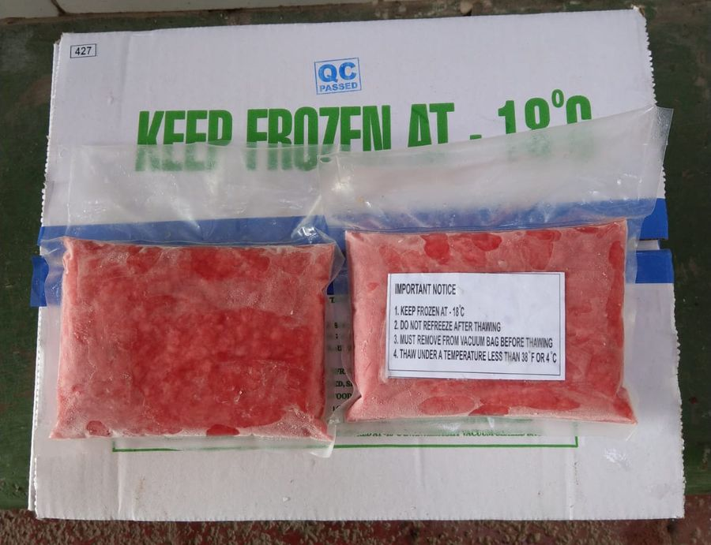

#1 grade fresh Bluefin from Mexico and Spain for chefs, fine-dining restaurants, and sushi bars across Los Angeles and Southern California.

We carry #1 grade fresh Bluefin, sourced from Mexico and Spain, with consistent color, fat, and texture from one order to the next. Chefs use it for sashimi, nigiri, crudo, and tartare. We supply whole loins.
Our fresh Bluefin is #1 grade, ready for sashimi, nigiri, crudo, and tartare.
Every order is handled under HACCP-aligned, cold-chain protocols from the dock to your kitchen door.
Fresh supply changes week to week. Ask what’s in before you set the menu, and we’ll quote by product and quantity.
Frozen Bluefin from our own AAA label, ready to keep on hand for steady menu items.

Frozen Bluefin loins from our AAA label, ready to keep on hand and portion in your kitchen as you need them.

Trimmed Bluefin blocks, ready to thaw and slice for sashimi and nigiri, with no breaking down a loin.

Ground Bluefin, ready to season for spicy tuna, hand rolls, and bowls.
#1 grade, so every loin meets the same standard.
Our Bluefin comes from Mexico and Spain.
It depends on your kitchen. A loin suits a sushi counter that breaks down fish and uses the trim; saku is ready to slice, for consistent portions with less prep. Loin vs. saku guide
Yes. Our fresh Bluefin is ready for raw service, from sashimi and nigiri to crudo and tartare.
Absolutely. Tell us what you need and how often, and our sales team will put together a quote for you. Restaurants & foodservice
Routes run from Santa Barbara and Bakersfield down through Los Angeles, the Inland Empire, and San Diego County. See delivery areas
Buying in larger quantities? Pallet orders are available. Learn more
Bluefin pricing moves with the market, so we quote each order. Ask for a quote
Tell us what you need and how much, and our sales team will quote you.